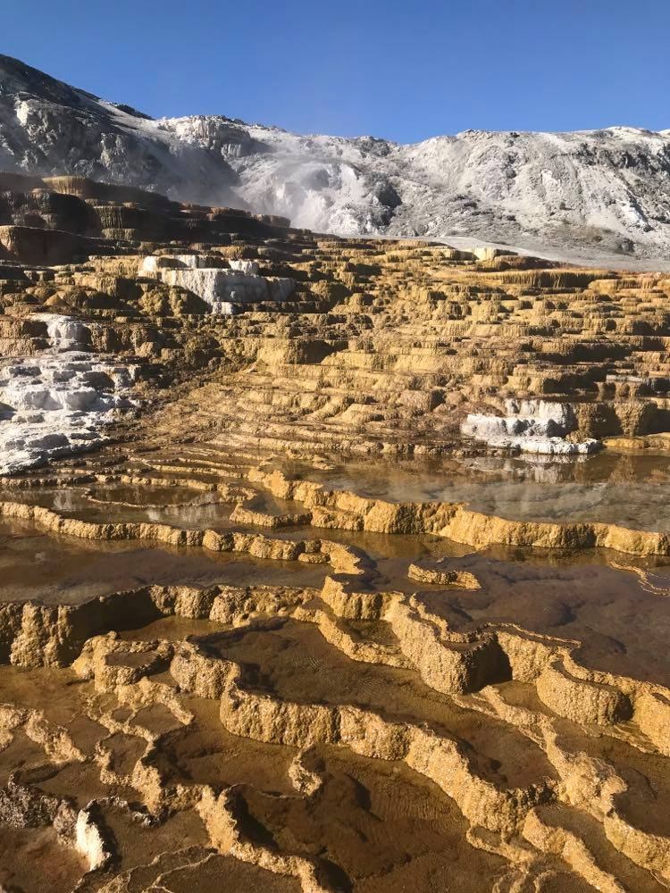

My Blog
We survived, which you knew because if you've been reading my blog I uploaded yesterday. You may all keep your eulogies till later.
Last night was a bit of a challenge for Alana. I passed out very quickly. In fact I simply rolled up in my sleeping bag without a pillow or anything and slept like a dead person or so I thought. What I didn't know is that Alana was up till 3 thinking about the people who were going to come murder us in the middle of nowhere where no one knew we were. And so she sat there thinking about how they would do it and what she would do in return. (dull knife to the carotid). While this was going through her head she also had Cell Block Tango stuck in her head. Now if Alana wasn't having enough of a night (she should have taken some of my melatonin) I apparently between 11:15 and 2:00 woke up 5-6 times in a blind panic. Some examples of this where me struggling with my sleeping bag while going "Get it off it's choking me!" The one I do remember however, is waking up feeling like I couldn't breath and going, "Oh my gosh, oh my gosh I can't breath where am I, I can't breath! Oh there's stars. I'm okay" and then falling back asleep. So needless to say Alana didn't sleep last night between murderers, Cell Block Tango, and a psychotic teenage girl.
This morning we got out of there about 7:15 and the drive back down seemed much quicker maybe because we weren't like "Oh my gosh, where the heck are we going?" We passed by the open dispersed camping and saw that a car from Vermont was pulling out and I can't help but wonder what their night must have been like. We decided to attempt Mammoth one more time and this proved to be a good decisiion because the park was pretty empty at 8:00 in the morning. We parked at the bottom and hiked up which was surprisingly difficult I think our bodies have had enough and need some TLC. I can definitely tell you that my burnt and peeling lips need it and maybe the blister family I have on my feet although I'm not sure if that is TLC or like I'm waiting for you to die. Mammoth was incredibly beautiful and now that we weren't in a coma we could actually enjoy it. There were very few people which helped and the weather was also sunny and warm. At one point we accidentally started hiking a scenic drive that was closed because we thought it was a trail but after walking for a while I was like. "Huh, that's interesting there are tire marks here." Case in point none functioning humans. We made it back to the car at some point though which is a good thing.
After Mammoth we thought it'd be a good idea to do one more hike. (As per usual on an empty stomach) Our first attempt was along the boiling river but we didn't want to hike down to it so we turned around after admiring some elk and hiked back up the hill and drove to the next parking area-which was closed because the Boiling River is hazardous due to spring run off. I don't know about you but I'm fairly certain we could have avoided the raging river and not accidentally followed the trail straight into a boiling raging inferno of death-maybe just me though. Neither of us were opposed to breaking the rule but because it was right near the park entrance and there are rangers everywhere we decided to stay out of trouble so gold stars for us. Honestly I really wouldn't mind a sticker. Third times the charm and we found the Rescue Creek trail head which wasn't closed. The problem is that it was 5 miles through desert to rescue creek. We still decided to do the trail and just hiked 30 minutes out and back. You should be proud of the fact that we set a time limit to keep from accidentally hiking all the way out. Coming back it felt like the Wild West. I kept expecting Clint Eastwood to pop out of somewhere. I stopped at one point and started playing the theme from The Good, The Bad, and The Ugly and it really completed the moment. Turning to Alana I was like, "All we need now are Stetsons and we could be in the Wild West." Unfortunately she was able to list several more things. Ei. Chaps, cowboy boots, holsters, horses. But personally I think that Stetsons would have gone a long way. They are cool after all.
We escaped the Wild West and drove back to Gardiner Montana where we found a Coffee Shop and got Malts with whipped cream on top-basically it was the most glorious thing ever.That is also where I finally uploaded my blog that I know you've all been dying to read. And well hopefully not to many of you were placing bets on how I died- although I'd get it if you had. After chilling in there we took off towards Helena. We'd decided it'd be a good place to spend the night especially cause it's free. I'd also been thinking about my hammock for months and so I really wanted to get back to that. The 3 hour drive up was one of the longest 3 hours of my life considering that we were both so exhausted that trying to speak was a struggle. We ended up listening to the wide range of my music from soundtracks, to broadway, to heavy metal, to pop, to children's songs, to Kanye I mean it was an experience. Also the highway turned into a dirt road for about 15 miles because someone decided to re-do 15 miles of highway at one point in time. Who on earth was like let's rip out 15 miles of highway all at once so everyone trying to get places has to go 35 mph for 15 miles and because it is a construction zone they will have the fear of God in them. When we finally reached Helena where I'd promised an apartment my key card din't work. That wasn't good because Greta was in Butte with Dad and our other roomate was out. And so doing the only thing I could I called Securitas. I called Securitas 10 times. When they finally did pick up 20 minutes after they were supposed to be on campus for the afternoon and I had explained my predicament they told me they would be there-in a bit. When I was like, "Okay thankyou so much" there was a sigh at the other end of the line and he said, "I mean a bit." It only took him 15 minutes to get there.
We got into the apartment at about 3:30 and it was really nice to be back. I have a second home there and I definitely missed it. Of course I got super stressed right away like, "Aghhh haven't done my homework-what homework do I have?" before remembering it is the middle of summer. I was supposed to go ut to dinner with a friend at 4 so naturally I made Alana and I a cup of tea and sat in my chair contemplating a shower. At 3:45 I kind of realized that I smelled just a little bit like dirty socks. Okay like a lot like dirty socks and so I went and scrubbed myself clean. (You are welcome Jackson-it was a tough decision). However, when he came to pick me up I hadn't talked to another person I knew face to face for a week so I may or may not have opened the door and said, "I forgot to grap hair ties and then slammed the door in his face." I excel at awkward. I also felt a little dead inside at this point because after walking down the stairs from my apartment I walked into the wall instead of down either pathway. We wandered around downtown looking for a gift for Fathers day but here is the fact of it. I hate shopping and most stores require a mask so we just walked up and down main street for an hour before going to dinner. I don't know why I thought it was a good idea to walk around more because it just increased my feelings of being dead inside. I was planning on visiting another friend at some point that evening but dinner convinced me it was probably a public safety hazard for Claire to be wandering around in civilization. Dinner itself was really good although I think he could have taken me to dinner at like McDonalds and I would have thought it was the best thing ever. I'd been thinking about French Fries for a week and finally got them and man that was heaven. After dinner I got dropped off at Augies where they were having a Fathers Day party that due to poor planning I had gone to dinner instead. Although it was super nice to see my friend and it kind of reminded me why I was excited to go back to school because I've been having nightmares about my classess for weeks
I have come to the realization that when I get really tired I start talking about drugs-like a lot and so Jacksons parting words were something like, "Don't do to many drugs" That's a little concerning but I promise I really don't do drugs unless its pain killers, or melatonin, or....okay but like it's not a problem. Anyways I felt really bad because at Augies I was only able to have a couple bites of ribs and they were honest to gosh the best ribs I have ever had in my life. It was super nice to see my family again and I was a little loopy and don't really remember much. Probably talked about drugs a lot or something. It was also really nice to see Greta and Augie who I missed quite a bit. However, both Alana and I were going into comas and when I was washing dishes that evening I had to turn the water on super hot so as not to fall asleep at my post. Greta and I hung out a little bit last night. Yes I'm writing my post the next day-there would have been a lot more mention of drugs had I written it when I was loopy. I also got the opportunity to meet our new roomate which was really cool. She came out in her bathrobe and I had a toothbrush stuck in my mouth and a dead look in my eye so a typically awkward meeting. Anyways she's super nice and I'm really excited to get to know her better. That's about it for yesterday. Tomorrow or rather today will be the last chapter in my epic voyage.
Made it out alive
-Claire